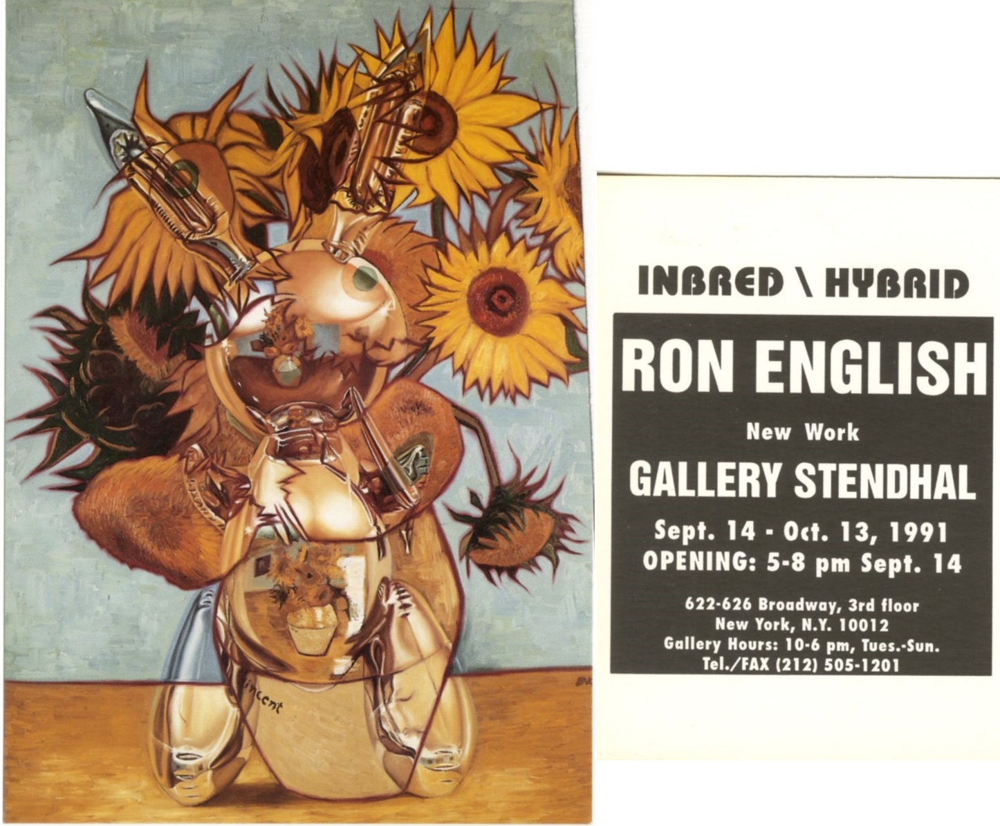

Exhibitions
Inbred / Hybrid, Gallery Stendhal, New York, New York, US, September 14–October 13, 1991.
Literature
Ron English, Fauxlosophy: The Art of Ron English (San Francisco: Last Gasp, 2008), p. 14. ISBN 978-0867196566.
Ron English, Popaganda: The Art & Subversion of Ron English (San Francisco: Last Gasp, 2001), p. 91. ISBN 1-887128-60-3.
Notes
In Popaganda, this work was erroneously reported as 48 × 60 inches.
This work is reproduced on the exhibition card for Inbred\Hybrid.

This work references Vincent van Gogh’s Sunflowers series (1888–1889).

This work also references Jeff Koons’s Rabbit (1986). A representative image is available here.